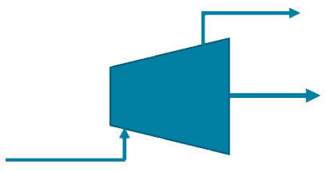
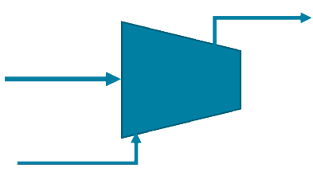
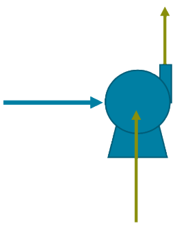
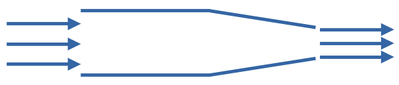
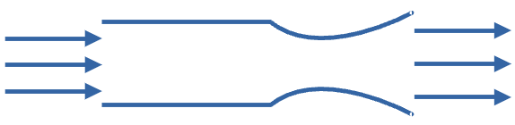
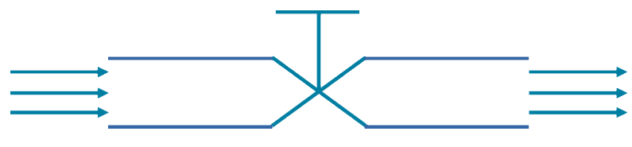

Entropy Made Me Do It: Turbines, Compressors, and Other Second-Law Shenanigans (Part 1)







\(\dot{m},\ T_\mathrm{in},\ P_\mathrm{in}\)
\(\dot{m},\ T_\mathrm{out},\ P_\mathrm{out}\)
\(\dot{m},\ T_\mathrm{in},\ P_\mathrm{in}, u_\mathrm{in}\)
\(\dot{m},\ T_\mathrm{out},\ P_\mathrm{out},\ u_\mathrm{out}\)
\(\dot{W}_s\)
Turbines or Expanders
Steam Turbine
Gas Turbine
Turbines or Expanders (cont.)
A turbine or expander takes a high-temperature and high-pressure steam or gas mixture and sends it through a series of blades, called stator blades and rotor blades, and expands it to create power or shaft work.
1st Law
Steam
\[ \Delta \dot{H} = \dot{W}_s = \dot{m} \Delta \hat{H} = \dot{m} (\hat{H}_\mathrm{out} - \hat{H}_\mathrm{in}) \]
Ideal Gas (\(C_p = \text{const}\))
\[ \Delta \dot{H} = \dot{W}_s = \dot{n} \Delta \hat{H} = \dot{n} \int_\limits{T_\mathrm{in}}^{T_\mathrm{out}} C_p \, dT = \dot{n} C_p (T_\mathrm{out} - T_\mathrm{in}) \]
Turbines or Expanders (cont.)
A real turbine has a turbine efficiency, that compares its performance with that of an isentropic turbine.
\[ \eta_\mathrm{turbine} = \frac{\dot{W}_{s\text{-actual}}}{\dot{W}_{s\text{-isentropic}}} = \frac{\Delta \hat{H}_\mathrm{actual}}{\Delta \hat{H}_\mathrm{isentropic}} \]
Calculating the isentropic values
\[ \Delta \hat{S} = 0 \]
Steam
\(\hat{S}_\mathrm{out} = \hat{S}_\mathrm{in},\ \ \ \ \ \ \ \ x = \dfrac{\hat{S}_\mathrm{in} - \hat{S}_l}{\hat{S}_v - \hat{S}_l} = \dfrac{\hat{S}_\mathrm{in} - \hat{S}_l}{\hat{S}_{lv}}\)
To calculate the outlet enthalpy
\(\hat{H}_\mathrm{out} = x\hat{H}_v + (1-x)\hat{H}_l = x\hat{H}_{lv} + \hat{H}_l\)
\(\Delta \hat{H}_\mathrm{isentropic} = \hat{H}_\mathrm{out} - \hat{H}_\mathrm{in}\)
Ideal Gas (\(C_p = \text{const}\))
\(\Delta \hat{S} = 0 = C_p \ln \dfrac{T_\mathrm{out}}{T_\mathrm{in}} - R \ln \dfrac{P_\mathrm{out}}{P_\mathrm{in}}\)
\(C_p \ln \dfrac{T_\mathrm{out}}{T_\mathrm{in}} = R \ln \dfrac{P_\mathrm{out}}{P_\mathrm{in}}\) or \(\dfrac{T_\mathrm{out}}{T_\mathrm{in}} = \left( \dfrac{P_\mathrm{out}}{P_\mathrm{in}} \right)^{\frac{R}{C_p}}\)
Substitute in for \(\Delta T\).
\(\Delta \hat{H}_\mathrm{isentropic} = C_p \Delta T = C_p (T_\mathrm{out} - T_\mathrm{in}) = C_p T_\mathrm{in} \left[ \left( \dfrac{P_\mathrm{out}}{P_\mathrm{in}} \right)^{\frac{R}{C_p}} - 1 \right]\)
Calculating actual properties
Steam
\(\eta_\mathrm{turbine} = \dfrac{\Delta \hat{H}_\mathrm{actual}}{\Delta \hat{H}_\mathrm{isentropic}}\)
\(\hat{H}_\text{out-actual} = \eta_\mathrm{turbine} \Delta \hat{H}_\mathrm{isentropic} + \hat{H}_\mathrm{in}\)
Calculating actual quality and entropy for steam
\(x_\mathrm{actual} = \dfrac{\hat{H}_\text{out-actual} - \hat{H}_l}{\hat{H}_v - \hat{H}_l} = \dfrac{\hat{H}_\text{out-actual} - \hat{H}_l}{\hat{H}_{lv}}\)
\(\hat{S}_\text{out-actual} = x_\mathrm{actual} \hat{S}_v + (1-x_\mathrm{actual}) \hat{S}_l = x_\mathrm{actual} \hat{S}_{lv} + \hat{S}_l\)
Calculating actual properties
Ideal Gas
\(\eta_\mathrm{turbine} = \dfrac{\Delta \hat{H}_\mathrm{actual}}{\Delta \hat{H}_\mathrm{isentropic}}\ \ \ \ \ \ \ \Delta \hat{H}_\mathrm{actual} = \eta_\mathrm{turbine} \Delta \hat{H}_\mathrm{isentropic}\)
\(\Delta \hat{H}_\mathrm{actual} = C_p \Delta T_\mathrm{actual}\)
\(T_\text{out-actual} = \dfrac{\Delta \hat{H}_\mathrm{actual}}{C_p} + T_\mathrm{in}\)
\(\Delta \hat{S}_\mathrm{actual} = C_p \ln \dfrac{T_\text{out-actual}}{T_\mathrm{in}} - R \ln \dfrac{P_\mathrm{out}}{P_\mathrm{in}}\)
Compressor
Ideal Gas only in the introductory DOFPro videos. Real gases in the advanced thermo videos. Two-phase compressors are rare.
{images}
Adiabatic Compressor
A real adiabatic compressor has a compressor efficiency, that compares its performance with that of an isentropic compressor.
\(\eta_\mathrm{compressor} = \dfrac{\dot{W}_{s\text{-isentropic}}}{\dot{W}_{s\text{-actual}}} = \dfrac{\Delta \hat{H}_\mathrm{isentropic}}{\Delta \hat{H}_\mathrm{actual}}\)
First Law
\(\Delta \dot{H} = \dot{W}_{s\text{-isen}} = \dot{n} \int\limits_{T_\mathrm{in}}^{T_\mathrm{out}} C_p \, dT = \dot{n} C_p \Delta T\)
Second Law
\(\Delta \hat{S}_\mathrm{air} = \int\limits_{T_\mathrm{in}}^{T_\mathrm{out}} C_p \dfrac{dT}{T} - R \ln \dfrac{P_\mathrm{out}}{P_\mathrm{in}} = C_p \ln \dfrac{T_\mathrm{out}}{T_\mathrm{in}} - R \ln \dfrac{P_\mathrm{out}}{P_\mathrm{in}}\)
Minimum work for \(\Delta \hat{S} = 0\)
\(C_p \ln \dfrac{T_\mathrm{out}}{T_\mathrm{in}} = R \ln \dfrac{P_\mathrm{out}}{P_\mathrm{in}}\ \ \ \ \ \ \ \dfrac{T_\mathrm{out}}{T_\mathrm{in}} = \left(\dfrac{P_\mathrm{out}}{P_\mathrm{in}}\right)^{\frac{R}{C_p}}\)
Plug \(T_\mathrm{out}\) back into 1st Law.
\(\dot{W}_{s\text{-isen}} = \dot{m} C_p \Delta T\)
Calculate work and final enthalpy from efficiency
\(\dot{W}_{s\text{-actual}} = \dfrac{\dot{W}_{s\text{-isen}}}{\eta_\mathrm{compressor}}\ \ \ \ \ \ \ \Delta \hat{H}_\mathrm{actual} = \dfrac{\Delta \hat{H}_\mathrm{isen}}{\eta_\mathrm{compressor}}\)
If necessary, you can calculate actual outlet \(T\) and entropy change.
Isothermal Compressor
A cooling-water jacket is often used to attempt to maintain the compressor at a constant temperature. An isothermal compressor uses much less power than an isentropic compressor, at the cost of a cooling system. A real isothermal compressor has a compressor efficiency, that compares its performance with that of a truly isothermal compressor.
\(\eta_\mathrm{compressor} = \dfrac{\dot{W}_{s\text{-isothermal}}}{\dot{W}_{s\text{-actual}}}\)
First Law
\(\Delta \dot{H}_{s\text{-iso}} = 0\ \ \ \ \ \ \dot{Q} = -\dot{W}_{s\text{-iso}} = \dot{n}RT\ln\dfrac{P_1}{P_2}\)
There is no need for the 2nd Law with an isothermal compressor.
Use the efficiency to calculate the actual work
\(\dot{W}_{s\text{-actual}} = \dfrac{\dot{W}_{s\text{-iso}}}{\eta_\mathrm{compressor}}\)
If necessary, you can calculate actual enthalpy change, outlet \(T\), and entropy change.
The Takeaways
- Adiabatic Turbines and compressors have efficiencies that compare the real or actual case with the isentropic case.
- Isothermal compressors have efficiencies that compare the real or actual case with the isothermal case.
- We have shown how to calculate turbines and compressors for both steam and ideal gas.
- We have shown how to calculate compressors for ideal gas only.
Thanks for watching!
The previous video in the series is in the link in the upper left. The next video in the series is in the upper right. To learn more about Chemical and Thermal Processes, visit the website linked in the description.
The DOFPro Team
Entropy Made Me Do It: Pumps, Nozzles, and Other Second-Law Shenanigans (Part 2)
\(\dot{m},\ T_\mathrm{in},\ P_\mathrm{in}\)
\(\dot{m},\ T_\mathrm{out},\ P_\mathrm{out}\)
\(\dot{m},\ T_\mathrm{in},\ P_\mathrm{in}, u_\mathrm{in}\)
\(\dot{m},\ T_\mathrm{out},\ P_\mathrm{out},\ u_\mathrm{out}\)
\(\dot{W}_s\)
Pump
Incompressible liquid only in introductory DOFPro videos. Advanced thermo videos cover thermal expansion.
{images}
Pump
A real pump has a pump efficiency, that compares its performance with that of an isentropic pump.
\(\eta_\mathrm{pump} = \dfrac{\dot{W}_{s\text{-isentropic}}}{\dot{W}_{s\text{-actual}}} = \dfrac{\Delta \hat{H}_\mathrm{isentropic}}{\Delta \hat{H}_\mathrm{actual}}\)
From the fundamental property relationships
\(d\hat{U} = Td\hat{S} - Pd\hat{V}\)
and
\(d\hat{H} = d\hat{U} + Pd\hat{V} + \hat{V}dP\) from \(\hat{H} = \hat{U} + P\hat{V}\)
\(d\hat{U} = d\hat{H} - Pd\hat{V} - \hat{V}dP\)
so
\(d\hat{H} - Pd\hat{V} - \hat{V}dP = Td\hat{S} - Pd\hat{V}\)
or
\(d\hat{H} = Td\hat{S} + \hat{V}dP\)
Second Law on pump (adiabatic and reversible)
\(\Delta S = 0\)
so
\(d\hat{S} = 0\)
\(d\hat{H} = T d\hat{S} + \hat{V}dP\)
For liquids V is a very weak function of pressure.
\(\int d\hat{H} = \int \hat{V} dP = \hat{V} \int dP\)
\(\Delta H_\mathrm{isen} = W_{s\text{-isen}} = V\Delta P\)
Calculating the actual work
\(\dot{W}_{s\text{-actual}} = \dfrac{\dot{W}_{s\text{-isentropic}}}{\eta_\mathrm{pump}}\)
\(\Delta \hat{H}_\mathrm{actual} = \dfrac{\Delta \hat{H}_\mathrm{isentropic}}{\eta_\mathrm{pump}}\)
If necessary, you can calculate the actual entropy change.
Nozzle
{images}
Nozzle
A real nozzle has a nozzle efficiency, that compares its performance with that of an isentropic nozzle.
\(\eta_\mathrm{nozzle} = \dfrac{u_\text{out-actual}^2}{u_\text{out-isentropic}^2}\)
The point of a nozzle is to get a huge increase in velocity.
First Law
\(\Delta \dot{H} + \Delta \dot{E}_k = 0\)
\(\hat{H}_\mathrm{out} - \hat{H}_\mathrm{in} + \dfrac{u_\mathrm{out}^2}{2} - \dfrac{u_{in}^2}{2} = 0\)
\(u_\mathrm{out}^2 = 2(\hat{H}_\mathrm{in} - \hat{H}_\mathrm{out}) + u_\mathrm{in}^2\)
\(u_\mathrm{out} = \sqrt{2(\hat{H}_\mathrm{in} - \hat{H}_\mathrm{out}) + u_\mathrm{in}^2}\) Be careful with units.
Second Law
\(\Delta \hat{S} = 0\ \ \ \ \ \hat{S}_\mathrm{out} = \hat{S}_\mathrm{in}\)
Ideal Gas
\(\Delta \hat{S} = 0 = C_p \ln \dfrac{T_\mathrm{out}}{T_\mathrm{in}} - R \ln \dfrac{P_\mathrm{out}}{P_\mathrm{in}}\)
\(C_p \ln \dfrac{T_\mathrm{out}}{T_\mathrm{in}} = R \ln \dfrac{P_\mathrm{out}}{P_\mathrm{in}}\) or \(\dfrac{T_\mathrm{out}}{T_\mathrm{in}} = \left( \dfrac{P_\mathrm{out}}{P_\mathrm{in}} \right)^{\frac{R}{C_p}}\)
Substitute in for \(\Delta T\).
\(\Delta \hat{H} = C_p \Delta T = C_p (T_\mathrm{out} - T_\mathrm{in}) = C_p T_\mathrm{in} \left[ \left( \dfrac{P_\mathrm{out}}{P_\mathrm{in}} \right)^{\frac{R}{C_p}} - 1 \right]\)
\(u_\text{out-isen}^2 - u_\mathrm{in}^2 = -2C_p \Delta T = 2C_p T_\mathrm{in} \left[ 1 - \left( \dfrac{P_\mathrm{out}}{P_\mathrm{in}} \right)^{\frac{R}{C_p}} \right]\)
Be careful with units.
For steam find the value of enthalpy in the steam table at the same entropy and pressure as the outlet.
\(u_\text{out-isen} = \sqrt{2(\hat{H}_\mathrm{in} - \hat{H}_\mathrm{out}) + u_\mathrm{in}^2}\) Be careful with units.
Find the actual velocity with the efficiency.
\(u_\text{out-actual}^2 = \eta_\mathrm{nozzle} u_\text{out-isen}^2\)
If necessary, you can calculate the actual temperature, enthalpy change, and entropy change.
Valves
A partially open valve, an orifice, or a throttling valve can all be described as a throttling process.
Throttling Process
Because the fluid passes quickly through a throttling process, the heat transfer is essentially zero. The First Law becomes
\(\Delta \dot{H} + \Delta \dot{E}_k + \Delta \dot{E}_p = \dot{Q} + \dot{W}_s\)
\(\hat{H}_\mathrm{out} = \hat{H}_\mathrm{in}\)
There isn’t much to a throttling process for an ideal gas, since the enthalpy is a function of temperature and \(\Delta H = 0\), so \(\Delta T\) = 0.
\(P_\mathrm{out} \hat{V}_\mathrm{out} = P_\mathrm{in} \hat{V}_\mathrm{in}\)
Throttling Process (cont.)
A throttling process for a liquid at the edge of the two-phase region is much more interesting. Normally, one specifies the inlet \(T\) and \(P\), that the quality in, \(x = 0\), and the outlet pressure.
\(\hat{H}_\mathrm{out} = \hat{H}_\mathrm{in}\)
One then uses the fluid two-phase table to determine the final pressure and quality. For example, take saturated liquid water at 50 bar, and flash it to 1 bar. Calculate the final temperature and quality.
Throttling Process (cont.)
At 50 bar and 263.94 °C
\(\hat{H}_\mathrm{in} = \hat{H}_l = 1154.5 \text{ kJ/kg}\)
At 1 bar
\(\boxed{T_\mathrm{out} = 99.61 \text{ }^\circ\text{C}}\)
\(\hat{H}_l = 417.44 \text{ kJ/kg}\)
\(\hat{H}_{lv} = 2257.5 \text{ kJ/kg}\)
\(\hat{H}_v = 2674.9 \text{ kJ/kg}\)
\(x = \dfrac{\hat{H}_\mathrm{out} - \hat{H}_l}{\hat{H}_{lv}} = \dfrac{1154.5 - 417.44}{2257.5} = \boxed{0.3265}\)
This is essentially a flash calculation accounting for the mass balance and the 1st Law.
The Takeaways
- Pumps and nozzles all have efficiencies that compare the real or actual case with the isentropic case.
- Valves or throttles have such large irreversibilities that no efficiency is calculated.
- We modeled pumps for incompressible fluids only.
- Nozzles and throttles were modeled for both steam and ideal gas.
Thanks for watching!
The previous video in the series is in the link in the upper left. The next video in the series is in the upper right. To learn more about Chemical and Thermal Processes, visit the website linked in the description.
The DOFPro Team